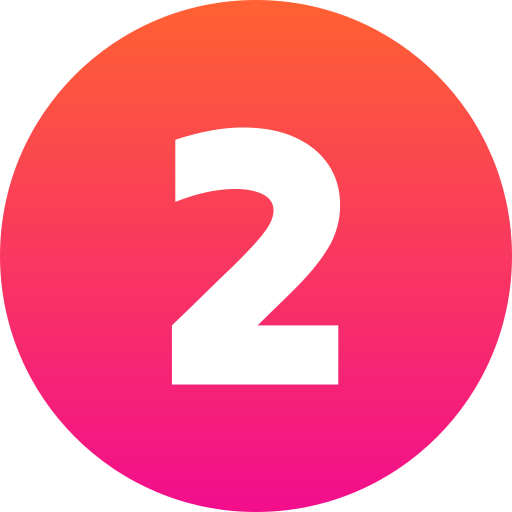

Compreender como os usuários acessam a web:
Conheça os diferentes dispositivos e tecnologias assistivas usados pelos usuários para garantir uma experiência inclusiva.

Entender os critérios da WCAG mais recente:
Familiarize-se com as diretrizes da WCAG para criar conteúdo web acessível e atender aos padrões mais atuais.
Implementar as boas práticas estudadas no tópico anterior:
Aplique as diretrizes da WCAG no código e no design para melhorar a acessibilidade do site.
Rodar uma avaliação automática primária:
Use ferramentas automáticas para identificar e corrigir problemas de acessibilidade no seu site.
Corrigir os erros encontrados:
Corrija os problemas identificados e repita as avaliações até não haver mais erros.
.png)
Realizar testes com a equipe técnica:
Teste o site com a equipe técnica para garantir a funcionalidade e compatibilidade em todos os aspectos.
Realizar testes com usuários com deficiência ou especialistas em acessibilidade:
Teste com usuários reais ou especialistas para obter feedback prático sobre a acessibilidade.
Manutenção constante:
Mantenha o site acessível com atualizações regulares e adaptações às novas diretrizes.